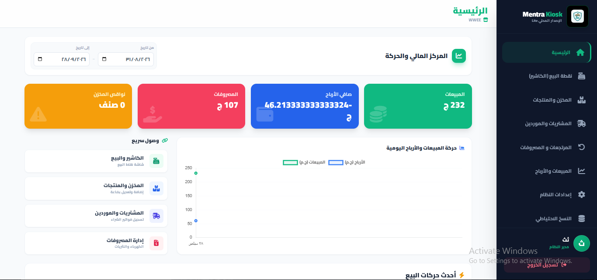
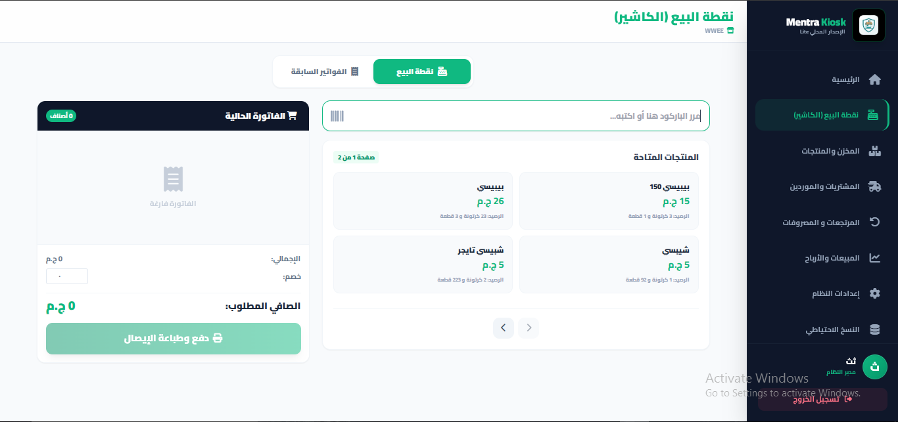
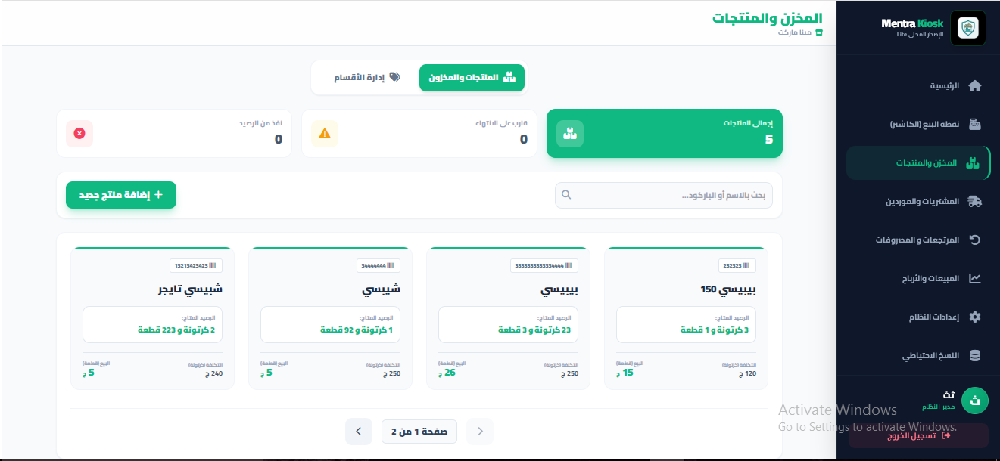
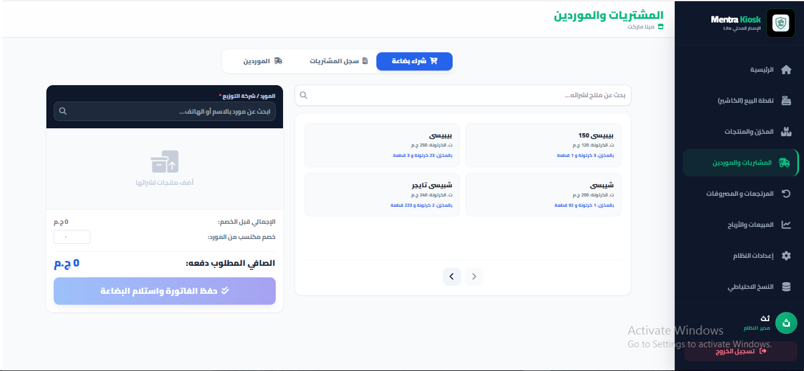
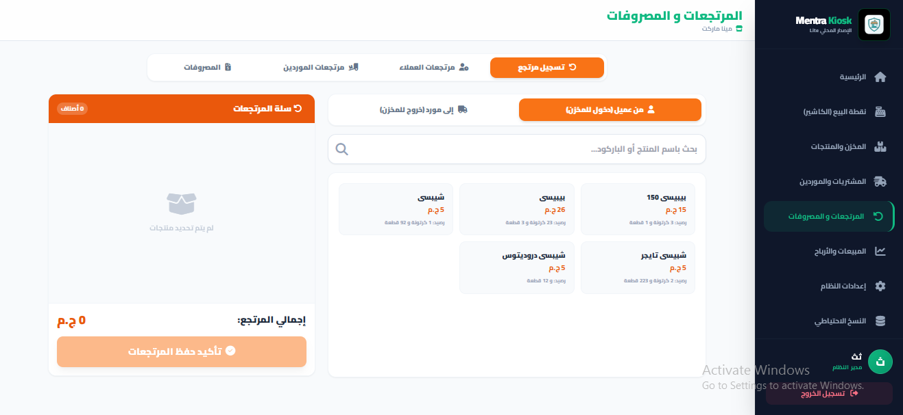
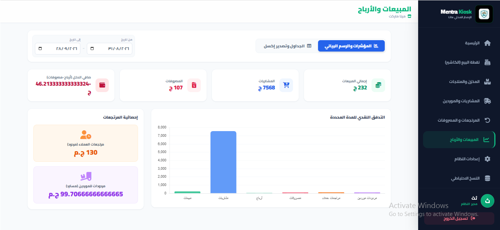
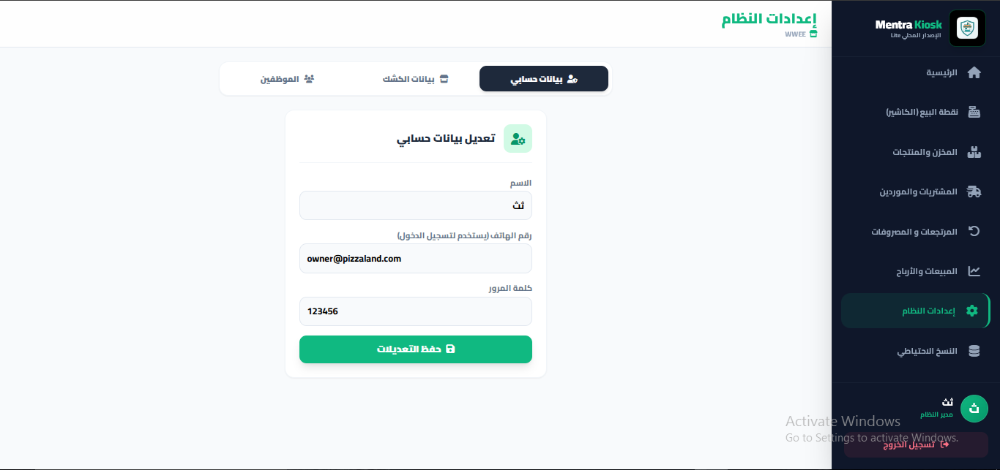
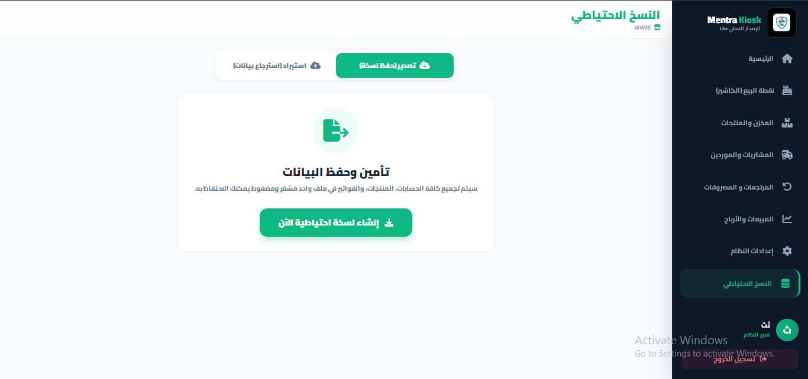

تعرّف على كافة وظائف Mentra Kiosk Lite
دليل مصور شامل يشرح طريقة إدارة المبيعات، المخزون، المشتريات، ومتابعة الأرباح والتقارير بدقة وسرعة وبدون الحاجة لإنترنت. اضغط على أي صورة لتكبيرها.
لوحة التحكم الرئيسية (Dashboard)
المركز المالي الشامل ومؤشرات أداء النشاط الحيوي
تمنحك لوحة التحكم نظرة بانورامية سريعة عن الكشك: تتبع المبيعات الصافية، الأرباح اللحظية، المصروفات، وتنبيهات نواقص المخزن (المنتجات التي قاربت على النفاد)، بالإضافة إلى رسم بياني يوضح التدفق المالي مع إمكانية التحديد الزمني (من تاريخ - إلى تاريخ).

اضغط على الصورة لتكبيرها
نقطة البيع والكاشير (POS)
البيع المباشر السريع بالباركود والطباعة الحرارية
شاشة بيع فورية فائقة السرعة، تتيح مسح الباركود، إضافة وتعديل الكميات بضغطة زر، وتطبيق الخصومات الفورية. تشمل طباعة الإيصال الحراري فوراً وسجل الفواتير السابقة مع إمكانية مراجعة الفاتورة أو إعادة طباعتها وتعديل الكميات بأمان مع إعادة تحديث رصيد المخزن تلقائياً.

اضغط على الصورة لتكبيرها
المخزن والمنتجات (Inventory)
تسجيل الأصناف، أسعار التكلفة والبيع، والوحدات المزدوجة
تحكم كامل في بضاعة الكشك: تعريف المنتجات بالباركود أو الاسم، ضبط سعر الشراء وسعر البيع للقطعة وللكرتونة مع إدخال عدد القطع في الكرتونة. يمكنك البحث السريع، تعديل الأسعار، ومراقبة المخزون الفعلي المتبقي في أي وقت.

اضغط على الصورة لتكبيرها
المشتريات والموردين (Purchases)
استلام بضاعة جديدة، ربط الفواتير بالموردين، والخصومات المكتسبة
إدارة ملفات الموردين وشركات التوزيع مع أرقام هواتفهم، وتسجيل فواتير الشراء سواء بالكرتونة أو بالقطعة مع إمكانية تسجيل الخصم المكتسب من المورد. بمجرد حفظ الفاتورة، تزيد كميات البضاعة في المخزن فورياً عبر نظام المعاملات المحمية (Transactions).

اضغط على الصورة لتكبيرها
المرتجعات والمصروفات التشغيلية (Returns)
ضبط رد البضاعة للعملاء والموردين وحساب النثريات
تحتوي الشاشة على 4 أقسام دقيقة: تسجيل مرتجع من عميل (يزيد المخزن)، مرتجع إلى مورد (يخصم من المخزن)، مع جداول تفصيلية لكل حركة، وقسم خاص بالمصروفات التشغيلية (كهرباء، نقل، إيجار، عمالة) لخصمها من أرباح النشاط بدقة.

اضغط على الصورة لتكبيرها
المبيعات والأرباح والتقارير (Reports)
تحليل حركة رأس المال واستخراج ملفات Excel (CSV)
لوحة إحصائية استراتيجية تتيح تصفية العمليات حسب التاريخ: عرض الرسوم البيانية، مقارنة المبيعات بالمشتريات والمصروفات، واحتساب صافي الأرباح. كما توفر جداول مقسمة بحد أقصى 4 عناصر في الصفحة وزر تصدير إلى ملف إكسل رسمي وفوري.

اضغط على الصورة لتكبيرها
إعدادات النظام والموظفين (Settings)
تعديل بيانات الحساب، بيانات الكشك، وإدارة حسابات الكاشير
تنقسم الإعدادات إلى 3 أقسام رئيسية: تعديل حساب المدير الشخصي وكلمة المرور، تعديل اسم الكشك والبيانات الأساسية التي تظهر في الإيصالات المطبوعة، وإدارة الموظفين (إضافة كاشير بصلاحيات مقيدة فقط لنقاط البيع مع إمكانية التعديل والحذف بسهولة).

اضغط على الصورة لتكبيرها
النسخ الاحتياطي والأمان (Backup & Restore)
تصدير واسترجاع البيانات بضغطة زر وبدون تجميد المتصفح
حماية شاملة لجميع بياناتك! تتيح لك الشاشة تحميل ملف نسخة احتياطية (.json) يحتوي على كل فواتيرك، منتجاتك، ومورديك بأسلوب التقطيع المتقدم (Chunking) حتى للبيانات الضخمة. وفي حالة الاسترجاع، يقوم النظام بحذف البيانات القديمة واستبدالها بالكامل مع تأكيد أمني مشدد.

اضغط على الصورة لتكبيرها
هل تحتاج إلى النسخة السحابية المتقدمة؟
إذا كان لديك أكثر من فرع، أو ترغب في متابعة المبيعات والأرباح من هاتفك في أي وقت ومكان، مع مزامنة سحابية لحظية، دعم الفاتورة الإلكترونية، شاشات المطبخ، وميزات محاسبية متقدمة.. فإن النسخة المتقدمة من نظام Mentra Kiosk Pro مصممة خصيصاً لتنمية تجارتك!
التواصل عبر رقم الواتساب الموضح متاح للرسائل والاستفسارات الفنية والتجارية.